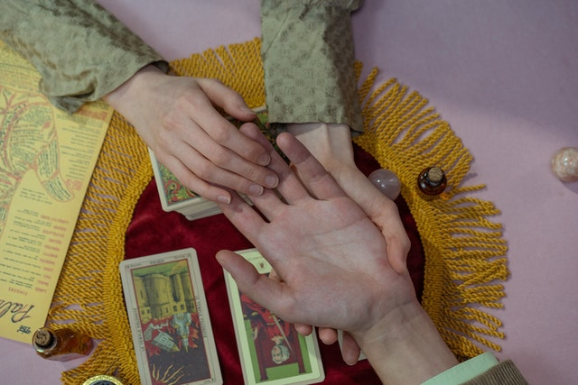

Why Choose Us

As you begin to embrace the "darker" side of life, black and white give dissolve into a beautiful circular spectrum of color and balance. You become an artist discovering and choosing pallets of infinite colors, whose sole focus is joy and grace. The spiritual and physical world exist constantly alongside one another in a yin and yang balance. It is very easy in today's society for the less plainly visible portion of this balance to be left behind and for imbalance to exist in our life and energy. Traditional Pagan Crafts wants for everyone to have that grace restored in their life - Not only for our neighbors to feel happy, be satisfied, and have youthful curiosity about their life, but because this balance and connection is the sole source of joy in this world. We want to provide you with the tools and guidance that you need for deep self understanding while also teaching you creative outlets that will help you express that connection that you can continue to grow and pursue at home.

Traditional Pagan Crafts has become a mecca in the midwest for spiritual individuals wanting to focus on their connection with themselves and live joyfully. It has become a great point of attraction for Kansas City over since the beginning of its popularity in the early 2000s here in Kansas City. Our company knows and is friends with over 200 Air Bnb locations across 11 states here in the midwest whose owners display our fliers and advocate for us highly. If you have happened upon one of these alternative lodging locations, we promise you a 25% discount on your first class. Along with that, we have a list of partners with Air Bnb at some beautiful and interesting locations in and around Kansas City. If you plan to stay at one of their comfortable abodes, we will also give you a 25% discount for the first class of each individual who signs up. Our energy is focused on inclusion and we want you to experience what the hype is about our growing business!